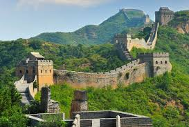

The Great Wall of China is one of the most extraordinary architectural achievements in human history. It is not a single continuous wall but a series of walls and fortifications built across northern China to protect Chinese states and empires from invasions. The wall stretches over 21,000 kilometers, making it the longest man-made structure in the world.

Construction of the Great Wall began as early as the 7th century BC. However, the first emperor of China, Qin Shi Huang (221–206 BC), connected and extended earlier walls to defend against northern tribes. Later dynasties, especially the Ming Dynasty (1368–1644), rebuilt and strengthened the wall.
The wall was constructed using locally available materials such as stone, brick, tamped earth, and wood. It includes watchtowers, signal towers, barracks, and fortresses. The builders carefully followed the natural terrain, constructing it over mountains, deserts, and grasslands.
The Great Wall demonstrates advanced ancient engineering techniques, especially in adapting construction methods to different geographical environments.
The primary purpose of the Great Wall was defense. It protected China from invasions by nomadic tribes such as the Mongols. It also helped regulate trade along the Silk Road and allowed the empire to control immigration and emigration.
Today, the Great Wall is a symbol of China's strength, unity, and determination. It represents the dedication and hard work of ancient Chinese civilization. In 1987, it was declared a UNESCO World Heritage Site.